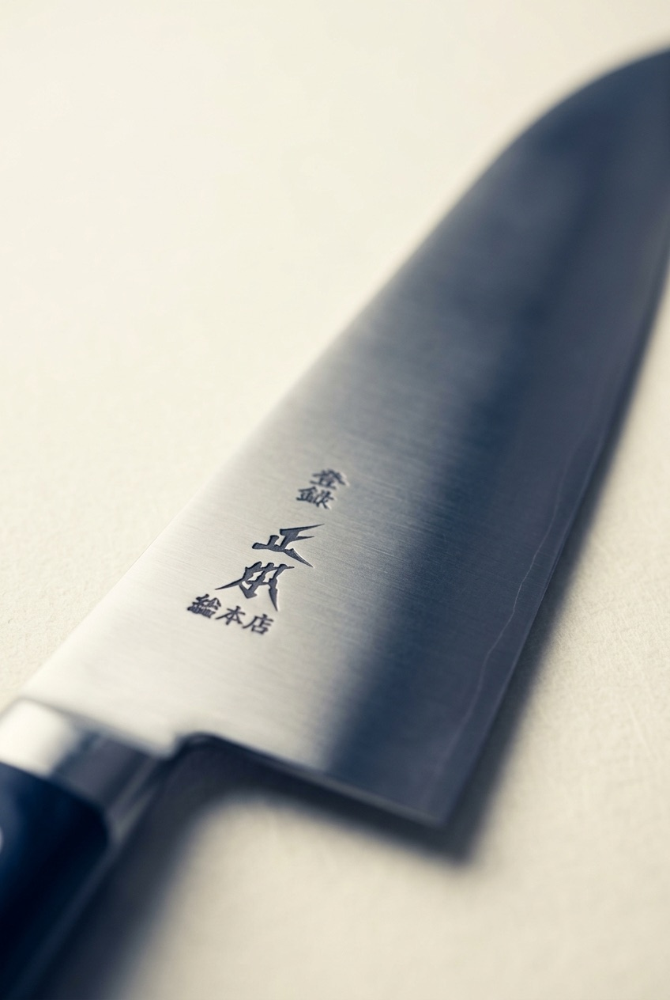

Search "Japanese chef knife" on Amazon and you'll get thousands of results calling themselves authentic. Most of that word is marketing. This one has a mark you can actually trace.
See current price on Amazon →As an Amazon Associate, I earn from qualifying purchases.
Almost every gyuto listing mentions Japan somewhere in the title. That word alone tells you nothing about who forged the blade, how long they've been doing it, or whether professional kitchens actually rely on it. The only real signal is provenance you can verify — and most listings don't have any.
Every MASAMOTO Gyuto carries the maker's seal engraved directly into the blade near the spine — not printed, not stamped on the box. MASAMOTO has been making knives in Tokyo since 1866, and the house is specifically known for supplying Edo-mae sushi chefs, a trade where a blade that flexes, chips, or loses its edge isn't a minor inconvenience — it's a dealbreaker for the whole service. A brand doesn't keep that kind of professional trust for over 150 years by cutting corners on the steel.
The seal is the part of the knife that's hardest to fake convincingly and easiest to verify: it's a specific mark, from a specific house, with a specific trade history behind it.
MASAMOTO Gyuto, 210mm blade — a standard, versatile length for an all-purpose Western-style Japanese chef's knife, sized for everyday prep rather than specialty cuts.
See current price on Amazon →As an Amazon Associate, I earn from qualifying purchases.
This page contains an affiliate link — if you buy through it, it costs you nothing extra and helps support this site.